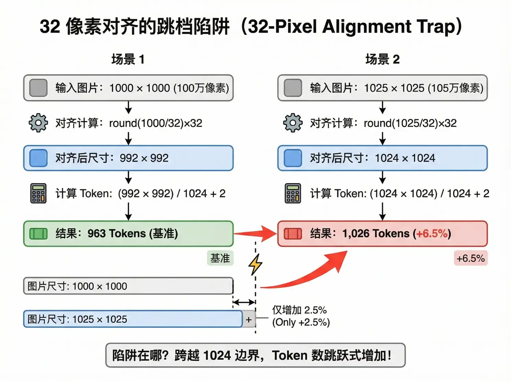

이미지 Token: 픽셀도 세금을 내요
텍스트 BPE는 “문자를 합치고”, 이미지 인코딩은 “픽셀을 자릅니다”. 원본을 보낸다고 생각하지만, 모델은 스케일·정렬 뒤의 해상도로 과금해요—여기에도 텍스트 32k 레드라인과 똑같은 구간 점프 함정이 숨어 있어요.
비전 모델은 이미지를 고정 크기 픽셀 블록으로 자르고, 블록마다 Token 하나를 대응시켜요. Qwen VL을 예로 들면 핵심 공식은:
| 변수 | 의미 | 설명 |
|---|---|---|
| h̄ / w̄ | 스케일 후 높이와 너비 | 32(또는 28)의 정수배로 강제 정렬 |
| token_pixels | Token당 픽셀 수 | Qwen3-VL은 32×32=1,024; QVQ / Qwen2.5-VL은 28×28=784 |
| +2 | 고정 오버헤드 | 비전 시작/끝 마커 <vision_bos>와 <vision_eos> |
GPT-4o와 Gemini는 타일(Tile) 방식을 써요. GPT-4o는 512×512 타일당 약 170 Token, Gemini 1.5 Pro는 768×768 타일당 약 258 Token. 비유하면: 텍스트의 어휘 사전 크기가 압축률을 정하고, 이미지의 픽셀 블록 크기가 압축률을 정해요—32×32가 28×28보다 더 아껴요.

흔한 해상도를 고르거나, 너비·높이를 직접 끌어 보세요. 1000×1000과 1025×1025라는 “쌍둥이 함정”에 주목. 과금 가정: Qwen3-VL, token_pixels = 1,024, 입력 1 위안/M (32k 안 표준 구간).

4K를 보내면 1080p보다 나을까요? 꼭 그렇지는 않고, 대개 값어치가 없어요.
| 해상도 | 스케일 후 (32 정렬) | Token 수 | 상대 비용 |
|---|---|---|---|
| 512 × 512 | 512 × 512 | 258 | 1x |
| 1080p (1920×1080) | 1920 × 1088 | 2,042 | 7.9x |
| 2K (2560×1440) | 2560 × 1440 | 3,602 | 14x |
| 4K (3840×2160) | 3840 × 2176 | 8,162 | 31.6x |
| 8K (7680×4320) | 스케일 상한 발동 | ~16,384 | 63.5x |
512에서 1080p로 가면 Token이 약 8배, 인식 정확도는 눈에 띄게 올라요. 2K에서 4K로 가면 Token이 또 한 배 가까이 늘지만, 정확도 향상은 눈에 안 보일 수 있어요. “더 선명함”에 돈을 낸다고 생각하지만, 실제로는 “더 많은 픽셀 블록”에 돈을 내는 거예요—그리고 그 여분 블록이 모델 이해에 주는 도움은 체감해요. 연구에 따르면 VLM 비전 Token 중복은 최대 85%에 달해요.
| 작업 유형 | Token 예산 | 대응 해상도 | 이유 |
|---|---|---|---|
| 거친 분류 (고양이 vs 개) | < 300 | 512 × 512 | 디테일 불필요 |
| 장면 이해 (뭐 하는 중인지) | < 1,000 | ~1000 × 1000 | 충분 |
| OCR / 차트 분석 | < 4,000 | ~2000 × 2000 | 글자를 읽어야 함 |
| 고정밀 검출 (의료 영상) | < 16,384 | 4K+ | 필요 시 vl_high_resolution_images 켜기 |
현장 동작은 세 가지: 프론트엔드 사전 압축(업로드 전에 목표 Token 안으로 눌러 해상도 레드라인을 막음), 작업 등급화(위 표에 맞추고 분류에 4K를 쓰지 말 것), 다중 이미지 예산 풀(배치 Token이 32k에 가까우면 절단—지난 레슨의 RAG 예산 절단과 같은 로직).

| 레드라인 | 임계값 | 결과 | 대응 |
|---|---|---|---|
| 32픽셀 정렬 | 크기가 32의 정수배를 넘음 | Token 수 점프 | 프론트엔드 전처리로 먼저 정렬 |
| 32k 입력 구간 | 다중 이미지 합계 > 32k Token | 전체 요청이 고가 구간으로 정산 | RAG와 같은 예산 절단 |
| 고해상도 남용 | 4K+ 원본을 무뇌로 전송 | 비용 30배, 정확도 향상은 제한적 | 작업 등급에 맞춰 해상도 매칭 |
이미지는 스케일·정렬 뒤 해상도로 과금돼요, 올린 원본 기준이 아니에요. 공식: (h̄×w̄)/token_pixels + 2.
고해상도의 수익은 체감해요: 4K는 1080p보다 약 4배 비싸지만 이해력이 꼭 낫지는 않아요. 작업 등급에 맞춰 해상도를 고르세요.
다중 이미지는 예산 풀을 쓰세요: 합계가 32k에 가까우면 절단하거나 압축하고, 다섯 번째 장이 전체를 고가 구간으로 끌지 않게 하세요.
출처: 저자 팀 내부 공유 《AI Token 비용 엔지니어링 전략 공유》 「이미지 Token 과금 메커니즘」에서 정리했어요. 공식 규칙은 알리클라우드 바이렌 비전 이해 문서를 보세요; 「해상도 저주」의 학술 출처는 CARES 논문이에요.